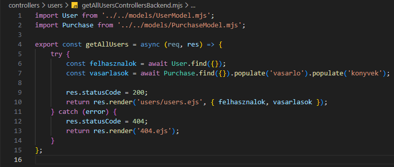
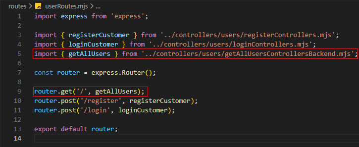
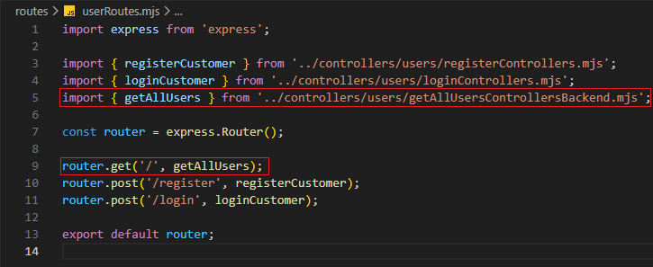

Felhasználók kezelése - getAllUsersControllersBackend.mjs
Felhasználók kezelése - getAllUsersControllersBackend.mjs

Ebben a részben szerkesztjük a controllers/users mappában a getAllUsersControllersBackend.mjs állományt, amelyben kidolgozzuk a CRUD Read művelethez tartozó logikát. Ez megfelel a http GET metódus-hoz tartozó logikának.
-
Szerkesszük a
getAllUsersControllersBackend.mjsállományunkat.-
import User from '../../models/UserModel.mjs';- aUsermodell alapértelmezett beimportálása. -
import Purchase from '../../models/PurchaseModel.mjs';- aPurchasemodell alapértelmezett beimportálása. -
export const getAllUsers = async (req, res) => {...};- hozzuk létre és vigyük ki nevesítve ahttp GET metódus-hoz tartozó logikát (ReadaCRUDműveletekből). -
try {... res.statusCode = 200; return res.render('users/users.ejs', { felhasznalok, vasarlasok }); }- a sikeres ág a 200-ashttp hibakód-dal. A vásárlásokat átadjuk ausers/users.ejsállománynak. -
const felhasznalok = await User.find({});- keressük meg a felhasználókat. -
const vasarlasok = await Purchase.find({}).populate('vasarlo').populate('konyvek');- keressük meg a vásárlásokat, majd helyettesítsük be avasarloéskonyvekértékeket ausersilletvebooksgyűjteményekből. -
catch (error) { res.statusCode = 404; return res.render('404.ejs'); }- a sikertelen ág a 404-eshttp hibakód-dal.
-
-
Szerkesszük a
userRoutes.mjsállományunkat. és 
-
import { getAllUsers } from '../controllers/users/getAllUsersControllersBackend.mjs';- agetAllUsersfüggvény nevesített importja. -
router.get('/', getAllUsers);- ahttp GET metódus-hoz tartozó logika hívása agetAllUsersfüggvény segítségével.
-